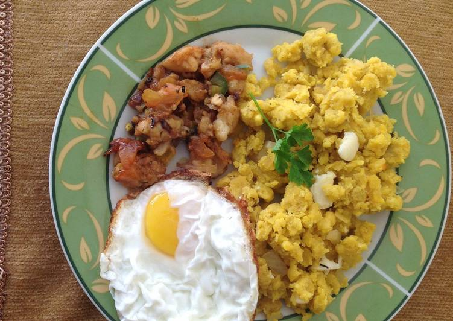

Ingredientes
3 libras de papas
1 libra de bacalao o pescado seco
1/4 cucharadita de pimienta negra
sal, comino, ajo
1/4 taza de aceite de oliva
4 ramas de cebollín
1 rama de cebolla blanca
Preparación
Remojar el pescado por unas dos horas para quitarle el sabor salado excesivo.
Picar la papa en cuadritos pequeños y cocinar. En dos tazas de agua con cebolla blanca, sal, comino y ajo, cocinar el bacalao. Dejar enfriar y desmenuzar en pedacitos pequeños.
Cortar los cebollines en pedacitos muy pequeños.
Refreir en aceite de oliva los cebollines cortaditos, agregar la papa cocinada, el bacalao desmenuzado, aderezar con sal, pimienta negra y más aceite de oliva. Servir caliente. Es un plato especial para Semana Santa.
Redes sociale